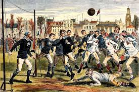
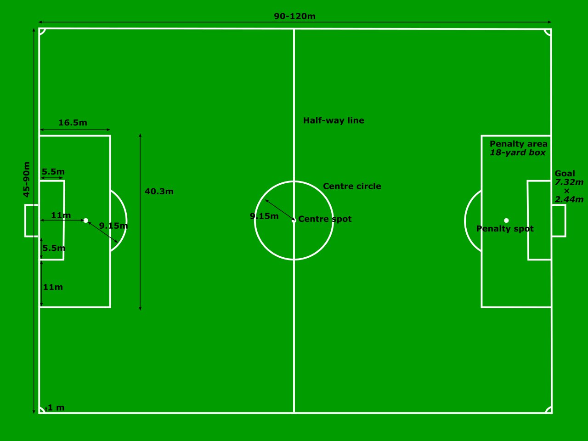
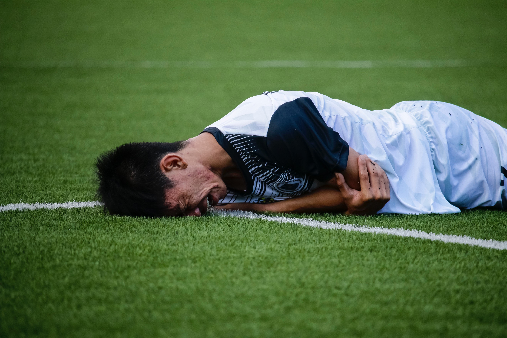
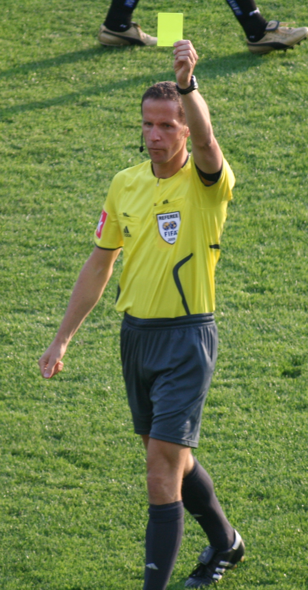

Sejarah

Sejarah olahraga sepak bola (permainan menendang bola) dimulai sejak abad ke-2 dan ke-3 sebelum Masehi di Tiongkok.
Pada masa Dinasti Han tersebut, masyarakat menggiring bola kulit dengan menendangnya ke jaring kecil.
Permainan serupa juga dimainkan di Jepang dengan sebutan Kemari.
Di Italia, permainan menendang dan membawa bola juga digemari terutama mulai abad ke-16.
Sepak bola modern mulai berkembang di Inggris dengan menetapkan peraturan-peraturan dasar dan menjadi sangat digemari oleh banyak kalangan.
Di beberapa kompetisi, permainan ini menimbulkan banyak kekerasan selama pertandingan sehingga akhirnya Raja Edward III melarang olahraga ini dimainkan pada tahun 1365.
Raja James I dari Skotlandia juga mendukung larangan untuk memainkan sepak bola. Pada tahun 1815, sebuah perkembangan besar menyebabkan sepak bola menjadi terkenal di lingkungan universitas dan sekolah.
Kelahiran sepak bola modern terjadi di Freemasons Tavern pada tahun 1863 ketika 11 sekolah dan klub berkumpul dan merumuskan aturan baku untuk permainan tersebut.
Bersamaan dengan itu, terjadi pemisahan yang jelas antara olahraga rugby dengan sepak bola (soccer).
Pada tahun 1869, membawa bola dengan tangan mulai dilarang dalam sepak bola.
Selama tahun 1800-an, olahraga tersebut dibawa oleh pelaut, pedagang, dan tentara Inggris ke berbagai belahan dunia.
Pada tahun 1904, asosiasi tertinggi sepak bola dunia (FIFA) dibentuk dan pada awal tahun 1900-an, berbagai kompetisi dimainkan diberbagai negara.
olahraga ini juga digemari terutama mulai abad ke-16.
Peraturan
Lapangan

Untuk pertandingan internasional dewasa, lapangan sepak bola internasional yang digunakan memiliki panjang yang berkisar antara 100-120 meter dan lebar 65-75 meter.
Di bagian tengah kedua ujung lapangan, terdapat area gawang yang berupa persegi empat berukuran dengan lebar 7.32 meter dan tinggi 2.44 meter.
Di bagian depan dari gawang terdapat area penalti yang berjarak 16.5 meter dari gawang.
Area ini merupakan batas kiper boleh menangkap bola dengan tangan dan menentukan kapan sebuah pelanggaran mendapatkan hadiah tendangan penalti atau tidak.
Lama Permainan

Lama permainan sepak bola normal adalah 2 X 45 menit, ditambah istirahat selama 15 menit di antara kedua babak.
Jika kedudukan sama imbang, maka diadakan perpanjangan waktu selama 2 X 15 menit, hingga didapat pemenang, namun jika sama kuat maka diadakan adu penalti.
Wasit dapat menentukan berapa waktu tambahan di setiap akhir babak sebagai pengganti dari waktu yang hilang akibat pergantian pemain, cedera yang membutuhkan pertolongan, ataupun penghentian lainnya.
Waktu tambahan ini disebut sebagai injury time atau stoppage time.
Gol yang dicetak dalam perpanjangan waktu akan dihitung menjadi skor akhir pertandingan, sedangkan gol dari adu penalti hanya menentukan jika suatu tim dapat melaju ke pertandingan selanjutnya ataupun tidak (tidak memengaruhi skor akhir).
Pada akhir tahun 1990-an, International Football Association Board (IFAB) memberlakukan sistem gol emas (golden gol) atau gol perak (silver gol) untuk menyelesaikan pertandingan.
Dalam sistem gol emas, tim yang pertama kali mencetak gol saat perpanjangan waktu berlangsung akan menjadi pemenang, sedangkan dalam gol perak, tim yang memimpin pada akhir babak perpanjangan waktu pertama akan keluar sebagai pemenang.
Kedua sistem tersebut tidak lagi digunakan oleh IFAB.
Pelanggaran

Apabila pemain melakukan pelanggaran yang cukup keras maka wasit dapat memberikan peringatan dengan kartu kuning atau kartu merah.
Pertandingan akan dihentikan sesaat dan wasit menunjukkan kartu ke depan pemain yang melanggar kemudian mencatat namanya di dalam buku.
Kartu kuning merupakan peringatan atas pelanggaran seperti bersikap tidak sportif, secara terus-menerus melanggar peraturan, berselisih kata-kata atau tindakan, menunda memulai kembali pertandingan, keluar-masuk pertandingan tanpa persetujuan wasit, ataupun tidak menjaga jarak dari pemain lawan yang sedang melakukan tendangan bebas atau lemparan ke dalam.
Pemain yang menerima dua kartu kuning akan mendapatkan kartu merah dan keluar dari pertandingan.
Pemain yang mendapatkan kartu merah harus keluar dari pertandingan tanpa bisa digantikan dengan pemain lainnya.
Beberapa contoh tindakan yang dapat diganjar kartu merah adalah pelanggaran berat yang membahayakan atau menyebabkan cedera parah pada lawan, meludah, melakukan kekerasan, melanggar lawan yang sedang berusaha mencetak gol, menyentuh bola dengan tangan untuk mencegah gol bagi semua pemain kecuali penjaga gawang, dan menggunakan bahasa atau gerak tubuh yang cenderung menantang, pemain yang berposisi sebagai penjaga gawang melakukan hands ball di luar kotak penalti .
Wasit dan Petugas Pertandingan

Dalam pertandingan profesional, terdapat 4 petugas yang memimpin jalannya pertandingan, yaitu wasit, 2 hakim garis, dan seorang petugas di pinggir tengah lapangan serta wasit gawang yang berada di pinggir gawang.
Wasit memiliki peluit yang menandakan apakah saat berhenti atau memulai memainkan bola.
Dia juga bertugas memberikan hukuman dan peringatan atas pelanggaran yang terjadi di lapangan.
Masing-masing penjaga garis bertanggung jawab mengawasi setengah bagian dari lapangan.
Mereka membawa bendera dengan warna terang untuk menandakan adanya pelanggaran, bola keluar, ataupun offside.
Biasanya mereka akan bergerak mengikuti posisi pemain belakang terakhir.
Petugas terakhir memiliki tugas untuk mencatat semua waktu yang sempat terhenti selama pertandingan berlangsung dan memberikan info mengenai tambahan waktu di akhir setiap babak.
Petugas ini juga bertugas memeriksa pergantian pemain dan menjadi penghubung antara manajer tim dengan wasit.
Dalam beberapa pertandingan, teknologi penggunaan video atau penggunaan orang kelima untuk menentukan ketepatan keputusan wasit mulai digunakan.
Misalnya yang menentukan apakah suatu bola telah melewati garis atau apakah seorang pemain berada dalam keadaan offside ketika mencetak gol.
Kejuaraan Internasional

Kejuaraan sepak bola internasional terbesar ialah Piala Dunia yang diselenggarakan oleh Fédération Internationale de Football Association (FIFA).
Piala Dunia diadakan setiap empat tahun sekali dan dimulai di Uruguay pada tahun 1930.
Pencetus ide tersebut adalah Jules Rimet, seorang pengacara dan pengusaha Prancis yang terinspirasi setelah menonton Olimpiade Paris tahun 1924.
Kompetisi internasional tertua di dunia adalah Copa America yang mempertandingkan tim-tim dalam wilayah Amerika Selatan setiap dua tahun sekali.
Copa America pertama kali diadakan tahun 1916 dan diikuti oleh 10 negara yang akhirnya membentuk The South American Football Confederation (Conmebol).
Untuk wilayah Amerika Utara, The Confederation of North, Central American and Caribbean Association Football (CONCACAF) menyelenggarakan kompetisi internasional setiap empat tahun sekali yang disebut Piala Emas CONCACAF.
Di kawasan Asia, termasuk Australia dan Timor Leste negara-negara yang tergabung dalam Asian Football Confederation (AFC), mengadakan kompetisi internasional pertama tingkat Asia pada tahun 1956 di Hongkong yang disebut Piala Asia. Pada tahun 1960, kompetisi tingkat regional Eropa diadakan untuk pertama kalinya dengan nama European Nations' Cup yang kemudian disebut sebagai UEFA European Championship (Piala Eropa atau EURO). Di wilayah Oseania (meliputi Selandia Baru, dan berbagai Kepulauan Pasifik), kompetisi international setiap dua tahun dimulai sejak tahun 1996 disebut Piala Oseania. Untuk wilayah Afrika, kompetisi Piala Afrika mulai diadakan sejak 1957 di Khartoum.